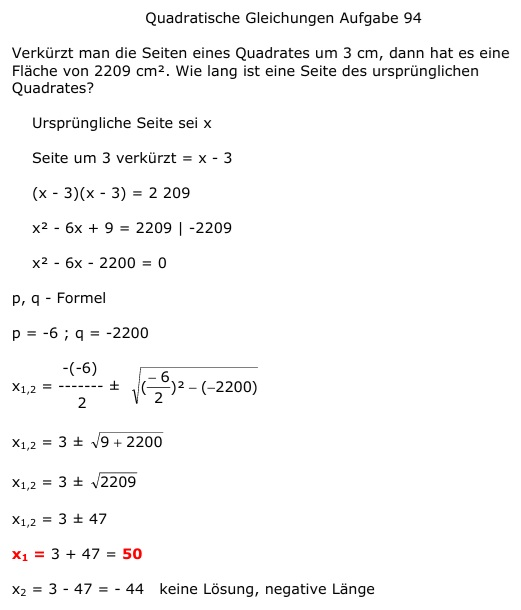

Aufgabe 94 Verkürzt man die Seiten eines Quadrates um 3 cm, dann hat es eine Fläche von 2209 cm2. Wie lang ist eine Seite des ursprünglichen Quadrates? Ursprüngliche Seite sei x Seite um 3 verkürzt = x - 3 (x - 3)(x - 3) = 2 209 x2 - 6x + 9 = 2209 |-2209 x2 - 6x - 2200 = 0 p, q - Formel p = -6 ; q = -2200  x1,2 = 3 ± 47 x1 = 3 + 47 = 50 x2 = 3 - 47 = -44 keine Lösung, negative Länge